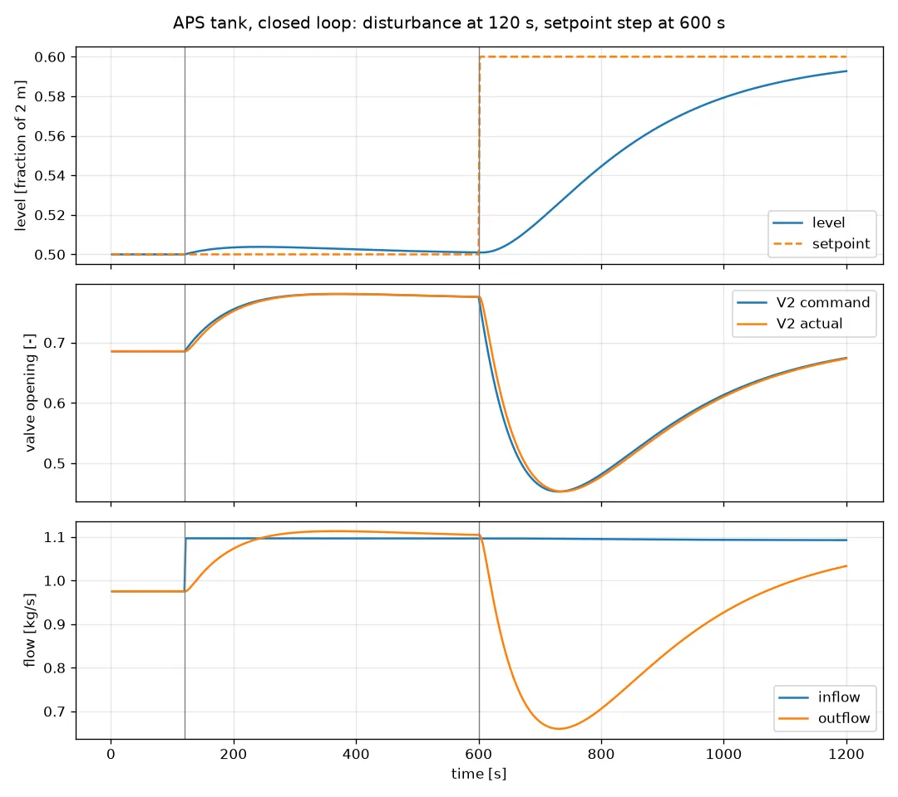

What the digital twin demonstrator does
Python talks to a dynamic AVEVA Process Simulation 2025 model through AVEVA's .NET Scripting Interface. Every 2 simulated seconds it reads the tank level, runs a velocity-form PI controller, writes the valve position back and logs the step to SQLite.


An honest label: this is a demonstrator. The "plant" is the simulation itself, and the same loop is built to accept real sensor data next.